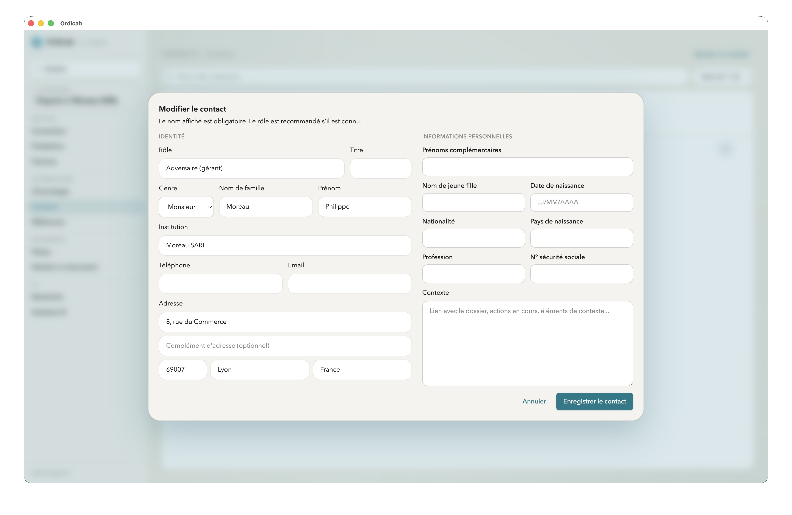
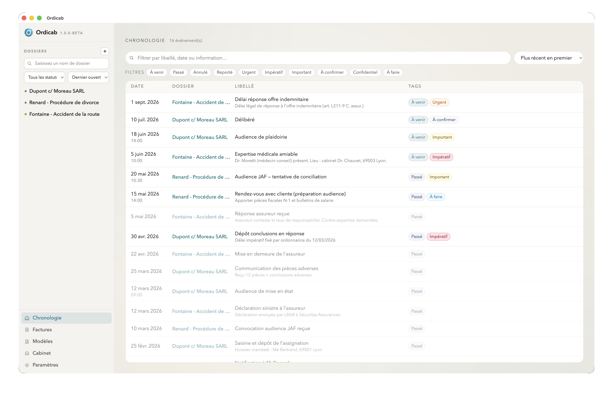
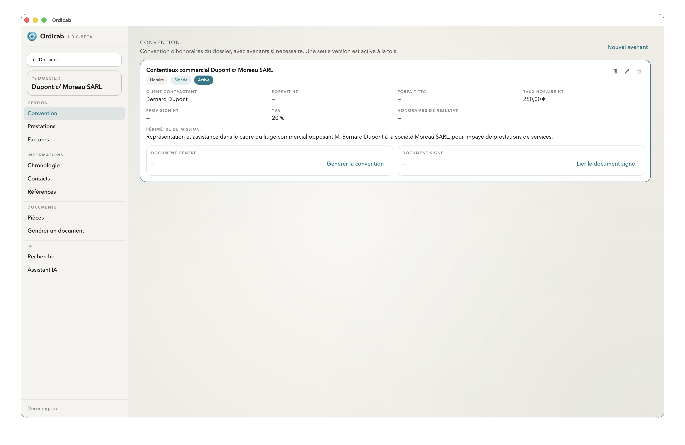
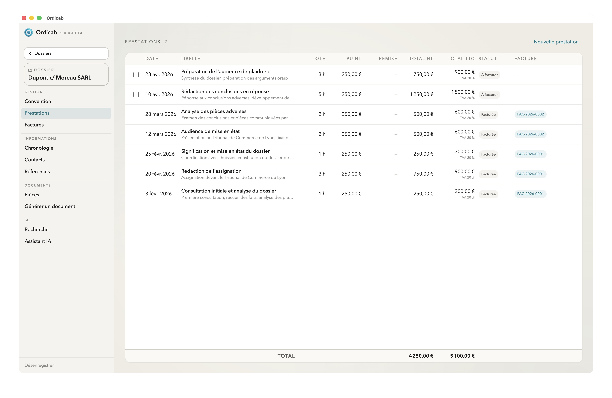
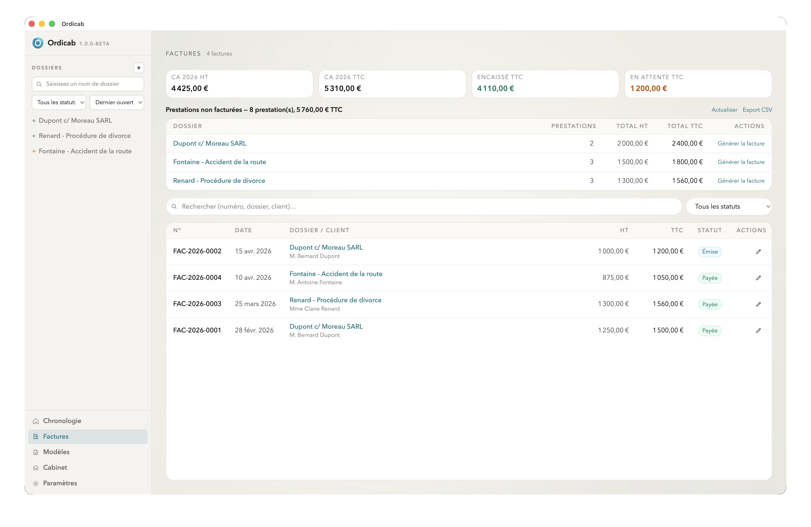

Dossiers
Chaque dossier est l'unité centrale d'Ordicab. Il regroupe toutes les informations d'une affaire : contacts, documents, chronologie, convention d'honoraires, prestations, factures et assistant IA.
La liste des dossiers
La vue Dossiers affiche l'ensemble de vos affaires sous forme de cartes. Chaque carte indique :
- le nom du dossier et sa référence ;
- son statut : Actif, En attente, Terminé, Archivé ;
- les intervenants principaux (client, adversaire…) ;
- les dates clés et échéances proches.

Vue d'ensemble d'un dossier — informations principales et navigation par onglets
Informations principales
L'onglet principal du dossier centralise :
- Nom et référence — identifiant unique de l'affaire dans votre cabinet.
- Type de dossier — catégorie juridique ou métier (configurable).
- Statut — Actif, En attente, Terminé, Archivé.
- Dates clés — ouverture, audience, délais, échéances importantes.
- Notes libres — zone de saisie riche pour les résumés, contexte et observations.
Contacts
Chaque dossier dispose de sa propre liste de contacts, classés par rôle :
- Client(s) — particuliers ou personnes morales représentés.
- Adversaire(s) — la partie adverse.
- Confrères — avocats collaborant sur le dossier.
- Juridiction — tribunal, cour ou autorité compétente.
- Tiers — experts, huissiers, notaires et autres intervenants.

Onglet Contacts — intervenants classés par rôle
Les contacts sont propres à chaque dossier. Leurs coordonnées (nom, email, téléphone, adresse) sont disponibles pour la génération de documents depuis les modèles et pour l'assistant IA.
Documents
L'onglet Documents permet de classer et consulter les pièces liées au dossier. Ordicab prévisualise les PDF, les fichiers Word (.docx) et les images directement dans l'application.
Les documents sont associés au dossier par référence de chemin — Ordicab ne déplace ni ne copie jamais vos fichiers.
Chronologie
La chronologie présente les événements du dossier dans l'ordre chronologique :
- audiences, assignations, délais de procédure ;
- courriers envoyés et reçus ;
- événements personnalisés (réunion, expertise, dépôt de pièce…).

Chronologie — vision structurée des événements et dates clés
Convention d'honoraires
L'onglet Convention suit les modalités contractuelles de la mission :
- type de convention (forfait, temps passé, résultat, mixte) ;
- phases ou tranches de mission avec leurs forfaits ;
- taux horaires applicables et conditions particulières.

Convention d'honoraires — phases, forfaits et modalités
Prestations
Saisissez le travail effectué au fil de l'eau dans l'onglet Prestations :
- date et description de la prestation ;
- durée (temps passé) ou montant forfaitaire ;
- rattachement à une phase de la convention.
Les prestations alimentent directement la facturation — aucune ressaisie n'est nécessaire.

Prestations — saisie du travail effectué et lien avec la facturation
Factures
L'onglet Factures regroupe les éléments facturables du dossier :
- génération à partir des prestations saisies ;
- ajout de débours, frais et honoraires hors temps passé ;
- suivi du statut de règlement.

Factures — préparation et suivi des éléments facturables
Assistant IA
Chaque dossier intègre un assistant IA qui exploite le contexte de l'affaire — contacts, documents, notes, chronologie — pour vous aider à :
- retrouver une information précise dans le dossier ;
- rédiger un courrier ou un email depuis les données du dossier ;
- extraire des dates, contacts ou références depuis un document ;
- préparer une synthèse ou un résumé.

Assistant IA — chat intégré au dossier avec contexte complet
La configuration de l'assistant (local ou API distante) est décrite dans la section Intelligence artificielle.
Suivant : Modèles de documents →